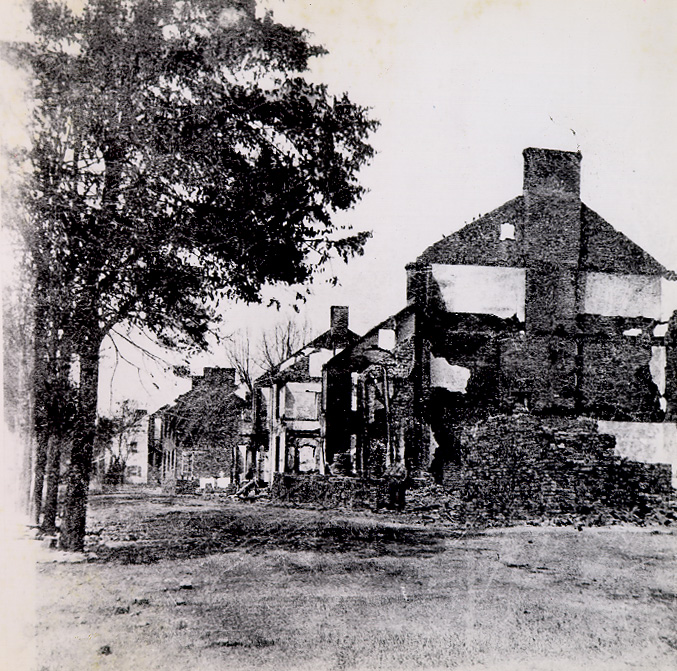

The news of the burning of Chambersburg by General John McCausland spread throughout the North within several hours of the burning. The New York newspapers published detailed articles about the invasion on July 31, 1864, the day after the burning. Editors and writers from these newspapers continued their analysis of the burning as additional information became available. At first, nothing but sympathetic feelings for the devastated citizens of Chambersburg were expressed. However, in time, the northern newspapers scolded the citizens of Chambersburg for not reacting in time or taking the threats of General McCausland seriously.
The citizens of Chambersburg showed little appreciation for this northern commentary on the burning. They argue that the northern troops rarely raided southern towns while marching to the battlefront and that the only exceptions were minor and due to threatening circumstances. According to The Franklin Repository, "[i]t is untrue--wholly, maliciously and treasonably false, as broadly stated or insidiously intimated by several journals..., that the Union troops have furnished any precedent for the burning and plundering of Chambersburg." The Chambersburg citizens insisted that there were no measures they could have taken to prevent the destruction and that they were victims of a cruel and malicious act. The money being demanded from General McCausland was a preposterous amount and could not possibly have been available with such short notice.
The Franklin Repository was especially infuriated by hypocritical strategies that had been suggested by the editor of the New York Tribune, Horace Greely. Mr. Greely openly supported a more violent, destructive treatment of the South by northern soldiers. He felt that such tactics would bring a sooner end to the war. However, The Repository argues that Mr. Greely and the New York Tribune are not angered by the southern troops, as they should be, but at the citizens of Chambersburg for not properly avoiding the destruction: "And now when their pernicious policy is bearing bitter fruit to the people along the border--when our citizens have despoiled of their property and their late comfortable and happy homes transformed into heaps of smouldering ruins, they mock at our calamities and ridicule our distresses!" It is clear that the citizens of Chambersburg were quick to defend their decision not to retreat. Furthermore, they blamed individuals ranging from Governor Curtin of Pennsylvania to the editors of New York newspapers for the burning of they town.
Of course, many families were also severely affected by the burning of Chambersburg. Using close friends and relatives for support was imperative in providing support for those who lossed real estate and personal property. In many cases, however, the fathers and husbands were fighting the war in the South while the wives and children were struggling to recover from the burning of Chambersburg. This proved to be extremely frustrating, especially for the men who were anxious to return home to help their loved ones. One such individual, Asst. Sgn. Charles Smith, was not even able to request leave in order to go home until April 15, 1865, some ten months after the burning.

-
Letter from Charles Smith to Lieut. McDermott
A letter from Asst. Sgn. Charles Smith requesting twenty days leave from duty to help his family find a new home in Chambersburg after the burning.
- "The Respository Re-Appears", The Franklin
Repository, August 24, 1864.
The editors of The Franklin Repository explain the losses incurred by the newspaper but insist to their readers not allow the burning to deter them from winning the war.
- "Burning of Chambersburg", The Franklin
Repository, August 24, 1864.
The author reprimands the South for mercilessly destroying Chambersburg when northern armies have consistently passed peacefully through the southern homefront.
- "Local Items", The Franklin Repository, August 24, 1864.
Provides an optimistic view of the future of Chambersburg since the burning. Calls upon the burned town's citizens to rebuild its businesses before the "adventurers and sharpers take their places".
- "The Future", The Valley Spirit, August
31, 1864.
Describes the bleak and desolate current state of Chambersburg and warns its citizens of colder seasons ahead.
- "The New York Papers", The Franklin
Repository, August 31, 1864.
Expresses bitterness toward the editors of the New York Tribune and New York Herald for the "heartlessness exhibited" in their views on the burning of Chambersburg.